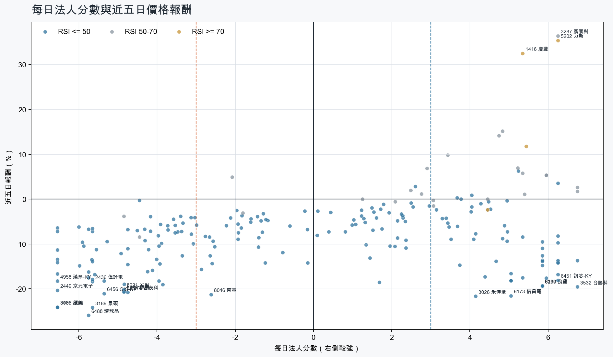
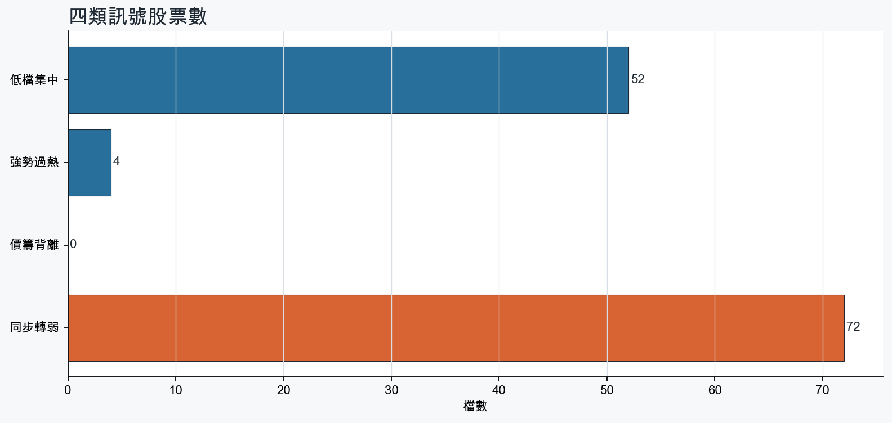
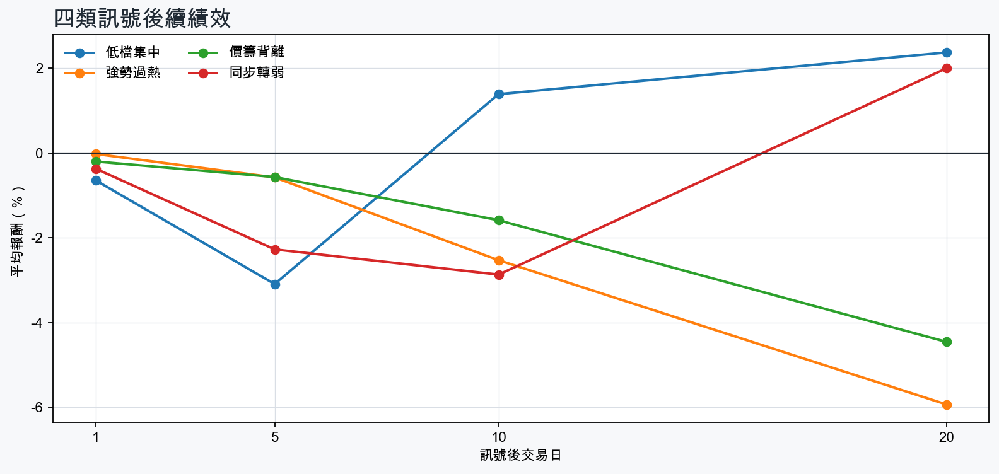

市場情緒偏空
近5日法人合計-11,445,943 張
篩選池上漲比例10.5%
籌碼好 / RSI低15 檔
籌碼差 / 價跌15 檔



EPS × PE VALUATION
法人常用的相對估值
顯示保守、基準與樂觀估值帶，不把單一數字包裝成精準目標價。
最新累計 EPS 依季數年化 × 同產業有效 P/E 的 Q25／中位數／Q75。排除本公司、非正 P/E，並以 1.5×IQR 排除離群值。估值帶是公開資料篩選值，不是法人目標價；未使用分析師預估 EPS。
MOOD × MONEY
情緒與籌碼雷達
熱度代表被討論程度；情緒分與法人方向分開計算。熱門不等於適合追價，樣本不足也不硬判多空。
| 股票 | 情緒 | 討論熱度 | 情緒 × 籌碼 | 情緒 × 基本面 |
|---|---|---|---|---|
| 6213 聯茂同步轉弱 | 中性分歧 +6.6信心 72 | 1002 篇 / 76 留言 / 0 則新聞 | 高熱分歧法人分 -3.9 | 基本面與情緒分歧基本面分 +3.6 |
| 3037 欣興同步轉弱 | 偏空 -27.2信心 71 | 851 篇 / 29 留言 / 3 則新聞 | 情籌雙弱法人分 -6.5 | 基本面佳、情緒悲觀基本面分 +3.6 |
| 3189 景碩同步轉弱 | 情緒低迷 -63.5信心 64 | 831 篇 / 26 留言 / 3 則新聞 | 情籌雙弱法人分 -5.7 | 基本面佳、情緒悲觀基本面分 +3.6 |
| 2408 南亞科同步轉弱 | 偏空 -18.5信心 66 | 801 篇 / 20 留言 / 3 則新聞 | 情籌混合法人分 -4.8 | 基本面與情緒分歧基本面分 +3.6 |
| 6488 環球晶同步轉弱 | 偏空 -29.7信心 30 | 510 篇 / 0 留言 / 3 則新聞 | 情籌雙弱法人分 -5.8 | 基本面與情緒分歧基本面分 -0.1 |
| 3105 穩懋同步轉弱 | 中性分歧 +0.0信心 30 | 510 篇 / 0 留言 / 3 則新聞 | 情籌混合法人分 -6.5 | 基本面與情緒分歧基本面分 +2.0 |
| 8021 尖點同步轉弱 | 中性分歧 +0.0信心 30 | 510 篇 / 0 留言 / 3 則新聞 | 情籌混合法人分 -4.8 | 基本面與情緒分歧基本面分 +3.6 |
| 6456 GIS-KY同步轉弱 | 偏多 +29.7信心 30 | 510 篇 / 0 留言 / 3 則新聞 | 熱門但法人撤退法人分 -5.3 | 情緒領先基本面基本面分 -2.0 |
| 2327 國巨*同步轉弱 | 中性分歧 +0.0信心 30 | 510 篇 / 0 留言 / 3 則新聞 | 情籌混合法人分 -5.8 | 基本面與情緒分歧基本面分 +2.0 |
| 1476 儒鴻強勢過熱 | 偏多 +29.7信心 30 | 510 篇 / 0 留言 / 3 則新聞 | 情籌共振法人分 +5.4 | 基本面與情緒共振基本面分 +2.4 |
| 1416 廣豐強勢過熱 | 偏多 +29.7信心 30 | 510 篇 / 0 留言 / 3 則新聞 | 情籌共振法人分 +5.3 | 基本面與情緒共振基本面分 +2.0 |
| 5202 力新強勢過熱 | 中性分歧 +0.0信心 30 | 510 篇 / 0 留言 / 3 則新聞 | 情籌混合法人分 +6.2 | 基本面與情緒分歧基本面分 -1.6 |
01
籌碼好 / RSI低
優先研究基本面；法人續買且價格止穩時，才適合分批觀察。
| 股票 / 確認狀態 | 每日法人分 | 浦男式近似 | 法人加速度 | RSI / 相對強弱 | 量價確認 | 融資融券 | 每週集保確認 | 基本面 | EPS × 同業 P/E 估值 | 情緒 / 情籌 | 近期消息 | 論壇討論 |
|---|---|---|---|---|---|---|---|---|---|---|---|---|
| 6179 亞通等待確認 · 98 分籌碼有訊號，但價格尚未確認 | +5.3法人 +2,757 張 / 4 天 | 接近 · 76中期均線偏多；法人籌碼偏多；法人買盤加速；留意未站月線、量能異常 | +2,301 張近3日 +2,430 / 連續 +3 日 | 41.3相對大盤 +8.6% | 量比 0.42確認分 +3.8收盤跌破20日線；成交量不足 | -2.5%融資 -548 張 / 融券 -32 張 | +2.13 pp1000張 +0.87 pp | 單月營收年增 +139.5%；累計營收年增 +132.5%仍需觀察下一期財報延續性來源：公開資訊觀測站 | 不適用最新財報缺少可年化 EPS | 樣本不足 +0.0熱度 0 / 信心 0情緒樣本不足 | 近期沒有通過股票語境篩選的新聞 | 近期沒有明確提及本股的論壇樣本 |
| 3029 零壹可研究 · 91 分籌碼與價格確認，可列研究清單 | +4.2法人 +1,740 張 / 3 天 | 接近 · 81中期均線偏多；法人籌碼偏多；法人買盤加速；留意未站月線、量能尚未確認 | +1,302 張近3日 +1,509 / 連續 +2 日 | 44.1相對大盤 +15.9% | 量比 0.83確認分 +2.2收盤跌破20日線 | -%融資 - 張 / 融券 - 張 | +3.35 pp1000張 +2.33 pp | 單月營收年增 +38.6%；累計營收年增 +22.0%；2026 Q3 累計 EPS 5.832026 Q3 累計營益率 6.0%來源：公開資訊觀測站 | 基準 NT$ 126.8估值帶 87.06–141.8現價 114.0 · 估值帶內 · 距基準 +11.2%2026 Q3 累計 EPS 5.83 → 年化 7.77資訊服務同業 P/E 11.20／16.31／18.24 · n=34 · 信心較高以 Q3 累計 EPS 年化，不等同分析師全年預估來源：TWSE／TPEx 每日本益比 | 中性分歧 +0.0熱度 51 / 信心 30情籌混合 | 零壹營收／10月39.18億元 創歷史新高紀錄經濟日報 · 11/093029 零壹 - 現在空 - 股市爆料同學會CMoney · 11/09 | 近期沒有明確提及本股的論壇樣本 |
| 9904 寶成可研究 · 92 分籌碼與價格確認，可列研究清單 | +4.5法人 +25,255 張 / 4 天 | 接近 · 73中期均線偏多；法人籌碼偏多；法人買盤加速；留意未站月線、量能尚未確認 | +4,036 張近3日 +16,194 / 連續 +3 日 | 40.0相對大盤 +18.9% | 量比 0.81確認分 +3.5收盤跌破20日線 | -%融資 - 張 / 融券 - 張 | +2.39 pp1000張 +2.43 pp | 單月營收年增 +10.4%累計營收年增 -0.5%來源：公開資訊觀測站 | 不適用最新財報缺少可年化 EPS | 樣本不足 +0.0熱度 0 / 信心 0情緒樣本不足 | 近期沒有通過股票語境篩選的新聞 | 近期沒有明確提及本股的論壇樣本 |
| 4566 時碩工業等待確認 · 81 分籌碼有訊號，但價格尚未確認 | +5.8法人 +1,554 張 / 4 天 | 接近 · 69中期均線偏多；法人籌碼偏多；買超具延續性；留意未站月線、法人買盤未加速 | -1,287 張近3日 +313 / 連續 +3 日 | 43.7相對大盤 +15.7% | 量比 0.36確認分 -0.8收盤跌破20日線；成交量不足；法人買盤減速 | -%融資 - 張 / 融券 - 張 | +3.34 pp1000張 +3.95 pp | 單月營收年增 +44.6%；累計營收年增 +23.4%仍需觀察下一期財報延續性來源：公開資訊觀測站 | 不適用最新財報缺少可年化 EPS | 樣本不足 +0.0熱度 31 / 信心 10情緒樣本不足 | 【即時新聞】最新！時碩工業10月營收6.75億創五連霸新高，AI散熱發威！CMoney · 11/06 | 近期沒有明確提及本股的論壇樣本 |
| 9921 巨大可研究 · 96 分籌碼與價格確認，可列研究清單 | +5.2法人 +2,932 張 / 5 天 | 接近 · 78站上月線；法人籌碼偏多；法人買盤加速；留意中期均線未翻多、基本面中性 | +1,388 張近3日 +2,209 / 連續 +10 日 | 39.6相對大盤 +14.8% | 量比 1.18確認分 +5.020日線低於60日線 | -%融資 - 張 / 融券 - 張 | +0.03 pp1000張 -1.40 pp | 單月營收年增 +2.9%累計營收年增 -5.1%來源：公開資訊觀測站 | 不適用最新財報缺少可年化 EPS | 偏多 +29.7熱度 51 / 信心 30情籌共振 | 巨大第三季營業利益大增29％ 前三季本業獲利年增4.7％工商時報 · 11/09本業已轉年成長！巨大捷安特前三季獲利年減15% 每股賺1.96元Yahoo股市 · 11/09 | 近期沒有明確提及本股的論壇樣本 |
| 4763 材料*-KY等待確認 · 85 分籌碼有訊號，但價格尚未確認 | +4.5法人 +6,616 張 / 4 天 | 接近 · 68法人籌碼偏多；法人買盤加速；買超具延續性；留意未站月線、中期均線未翻多 | +3,336 張近3日 +5,464 / 連續 +4 日 | 39.4相對大盤 +11.3% | 量比 1.06確認分 +3.0收盤跌破20日線；20日線低於60日線 | -%融資 - 張 / 融券 - 張 | +0.72 pp1000張 +0.51 pp | 單月營收年增 +30.5%累計營收年增 -17.1%來源：公開資訊觀測站 | 不適用最新財報缺少可年化 EPS | 中性分歧 +0.0熱度 51 / 信心 30情籌混合 | 【材料*-KY 法說會重點內容備忘錄】未來展望趨勢 20261106富果直送 · 11/06材料*-KY 2026-11-06 法說會BigGo 財經 · 11/07 | 近期沒有明確提及本股的論壇樣本 |
| 2892 第一金可研究 · 86 分籌碼與價格確認，可列研究清單 | +3.5法人 +25,959 張 / 5 天 | 接近 · 82中期均線偏多；法人籌碼偏多；法人買盤加速；留意未站月線、基本面中性 | +14,684 張近3日 +20,114 / 連續 +5 日 | 49.1相對大盤 +22.3% | 量比 1.14確認分 +3.8收盤跌破20日線 | -%融資 - 張 / 融券 - 張 | +0.55 pp1000張 +0.54 pp | 累計營收年增 +15.8%單月營收年增 -1.3%來源：公開資訊觀測站 | 不適用最新財報缺少可年化 EPS | 中性分歧 +0.0熱度 51 / 信心 30情籌混合 | 2892 第一金- 房市冷租屋需求增！一銀聯手台灣金聯打造押金全額信託防護網- 股市爆料同學會CMoney · 11/09《投信買超8-6》第一金(288)、台光電(269)、台達電(269)富聯網 · 11/09 | 近期沒有明確提及本股的論壇樣本 |
| 6962 奕力-KY等待確認 · 84 分籌碼有訊號，但價格尚未確認 | +3.7法人 +2,241 張 / 4 天 | 接近 · 76法人籌碼偏多；法人買盤加速；買超具延續性；留意未站月線、中期均線未翻多 | +1,866 張近3日 +1,889 / 連續 +4 日 | 45.5相對大盤 +10.7% | 量比 1.24確認分 +3.0收盤跌破20日線；20日線低於60日線 | -%融資 - 張 / 融券 - 張 | +0.29 pp1000張 +0.42 pp | 單月營收年增 +1.3%；2026 Q3 累計 EPS 1.51累計營收年增 -0.0%；2026 Q3 累計營益率 2.9%來源：公開資訊觀測站 | 基準 NT$ 41.88估值帶 28.73–71.21現價 30.20 · 估值帶內 · 距基準 +38.7%2026 Q3 累計 EPS 1.51 → 年化 2.01半導體同業 P/E 14.27／20.80／35.37 · n=154 · 信心較高以 Q3 累計 EPS 年化，不等同分析師全年預估來源：TWSE／TPEx 每日本益比 | 樣本不足 +0.0熱度 0 / 信心 0情緒樣本不足 | 近期沒有通過股票語境篩選的新聞 | 近期沒有明確提及本股的論壇樣本 |
| 8033 雷虎等待確認 · 76 分籌碼有訊號，但價格尚未確認 | +6.2法人 +2,507 張 / 5 天 | 接近 · 59法人籌碼偏多；法人買盤加速；買超具延續性；留意未站月線、中期均線未翻多 | +75 張近3日 +1,336 / 連續 +6 日 | 28.8相對大盤 -2.1% | 量比 1.01確認分 -1.0收盤跌破20日線；20日線低於60日線 | -%融資 - 張 / 融券 - 張 | +0.29 pp1000張 +0.00 pp | 單月營收年增 +27.9%；累計營收年增 +14.8%仍需觀察下一期財報延續性來源：公開資訊觀測站 | 不適用最新財報缺少可年化 EPS | 樣本不足 +0.0熱度 0 / 信心 0情緒樣本不足 | 近期沒有通過股票語境篩選的新聞 | 近期沒有明確提及本股的論壇樣本 |
| 2542 興富發等待確認 · 78 分籌碼有訊號，但價格尚未確認 | +4.0法人 +6,886 張 / 5 天 | 接近 · 60法人籌碼偏多；法人買盤加速；買超具延續性；留意未站月線、中期均線未翻多 | +2,306 張近3日 +4,701 / 連續 +8 日 | 29.0相對大盤 +13.3% | 量比 0.64確認分 +1.0收盤跌破20日線；20日線低於60日線；成交量不足 | -%融資 - 張 / 融券 - 張 | +0.69 pp1000張 +0.71 pp | 單月營收年增 +103.7%；累計營收年增 +228.4%仍需觀察下一期財報延續性來源：公開資訊觀測站 | 不適用最新財報缺少可年化 EPS | 樣本不足 +0.0熱度 0 / 信心 0情緒樣本不足 | 近期沒有通過股票語境篩選的新聞 | 近期沒有明確提及本股的論壇樣本 |
| 1802 台玻等待確認 · 73 分籌碼有訊號，但價格尚未確認 | +5.0法人 +31,144 張 / 3 天 | 接近 · 73中期均線偏多；法人籌碼偏多；買超具延續性；留意未站月線、法人買盤未加速 | -63,182 張近3日 -13,452 / 連續 +2 日 | 45.7相對大盤 +15.7% | 量比 0.47確認分 -0.8收盤跌破20日線；成交量不足；法人買盤減速 | -%融資 - 張 / 融券 - 張 | -0.32 pp1000張 -0.30 pp | 單月營收年增 +34.1%；累計營收年增 +18.7%；2026 Q3 累計 EPS 1.57仍需觀察下一期財報延續性來源：公開資訊觀測站 | 不適用同產業有效 P/E 樣本不足（3 檔） | 中性分歧 +0.0熱度 51 / 信心 30情籌混合 | 三大法人買賣超 – 外資買超(1802)台玻、(1815)富喬，投信買超(2330)台積電、(3443)創意，法人合計賣超945.26億元永豐金證券 · 11/09【即時新聞】最新台股飆漲2650點，台玻盤中強勢亮燈漲停，買氣回溫展現強大動能！CMoney投資網誌 · 11/09 | 近期沒有明確提及本股的論壇樣本 |
| 1810 和成等待確認 · 82 分籌碼有訊號，但價格尚未確認 | +4.9法人 +2,217 張 / 5 天 | 未命中 · 57法人籌碼偏多；法人買盤加速；買超具延續性；留意未站月線、中期均線未翻多 | +901 張近3日 +1,587 / 連續 +8 日 | 28.3相對大盤 +4.4% | 量比 1.21確認分 +2.1收盤跌破20日線；20日線低於60日線；流動性偏低 | -%融資 - 張 / 融券 - 張 | +0.66 pp1000張 +1.13 pp | 單月營收年增 +4.7%累計營收年增 -5.2%來源：公開資訊觀測站 | 不適用最新財報缺少可年化 EPS | 樣本不足 +0.0熱度 0 / 信心 0情緒樣本不足 | 近期沒有通過股票語境篩選的新聞 | 近期沒有明確提及本股的論壇樣本 |
| 2886 兆豐金等待確認 · 78 分籌碼有訊號，但價格尚未確認 | +3.1法人 +44,143 張 / 5 天 | 接近 · 79中期均線偏多；法人籌碼偏多；買超具延續性；留意未站月線、法人買盤未加速 | -8,141 張近3日 +20,390 / 連續 +8 日 | 43.5相對大盤 +23.4% | 量比 1.69確認分 +1.8收盤跌破20日線；法人買盤減速 | -%融資 - 張 / 融券 - 張 | +0.47 pp1000張 +0.50 pp | 單月營收年增 +16.5%；累計營收年增 +16.6%仍需觀察下一期財報延續性來源：公開資訊觀測站 | 不適用最新財報缺少可年化 EPS | 偏空 -29.7熱度 51 / 信心 30法人布局、市場悲觀 | 八大官股》台股吃大補丸！官股逆勢賣超兆豐金6463張，聯電獲敲進7859張居冠風傳媒 · 11/09【最新消息】11/4中華電、兆豐金帶動網銀生態圈，3檔股價結構解析-起漲K線CMoney投資網誌 · 11/04 | 近期沒有明確提及本股的論壇樣本 |
| 2027 大成鋼等待確認 · 74 分籌碼有訊號，但價格尚未確認 | +3.4法人 +4,128 張 / 5 天 | 接近 · 79中期均線偏多；法人籌碼偏多；買超具延續性；留意未站月線、法人買盤未加速 | -916 張近3日 +2,189 / 連續 +10 日 | 36.0相對大盤 +16.1% | 量比 1.26確認分 +0.6收盤跌破20日線；法人買盤減速 | -%融資 - 張 / 融券 - 張 | +1.53 pp1000張 +1.49 pp | 單月營收年增 +41.1%；累計營收年增 +35.0%仍需觀察下一期財報延續性來源：公開資訊觀測站 | 不適用最新財報缺少可年化 EPS | 樣本不足 +0.0熱度 31 / 信心 10情緒樣本不足 | 營收速報 - 大成鋼(2027)10月營收133.11億元年增率高達44.8％｜新聞快訊｜豐雲學堂永豐金證券 · 11/06 | 近期沒有明確提及本股的論壇樣本 |
| 5876 上海商銀等待確認 · 75 分籌碼有訊號，但價格尚未確認 | +3.4法人 +8,330 張 / 5 天 | 接近 · 68中期均線偏多；法人籌碼偏多；買超具延續性；留意未站月線、法人買盤未加速 | -3,173 張近3日 +3,115 / 連續 +10 日 | 33.7相對大盤 +19.9% | 量比 0.88確認分 +0.9收盤跌破20日線；法人買盤減速 | -%融資 - 張 / 融券 - 張 | +0.32 pp1000張 +0.39 pp | 單月營收年增 +10.7%；累計營收年增 +2.8%；2026 Q3 累計 EPS 3.11仍需觀察下一期財報延續性來源：公開資訊觀測站 | 基準 NT$ 51.92估值帶 27.45–63.78現價 51.40 · 估值帶內 · 距基準 +1.0%2026 Q3 累計 EPS 3.11 → 年化 4.15金融保險同業 P/E 6.62／12.52／15.38 · n=39 · 信心較高以 Q3 累計 EPS 年化，不等同分析師全年預估來源：TWSE／TPEx 每日本益比 | 樣本不足 +9.9熱度 31 / 信心 10情緒樣本不足 | 上海商銀獲利／前十月164億元、年成長22% EPS 為3.35元UDN · 11/09 | 近期沒有明確提及本股的論壇樣本 |
02
籌碼好 / RSI高
趨勢強但不追價，等待量縮、RSI降溫或回測支撐。
| 股票 / 確認狀態 | 每日法人分 | 浦男式近似 | 法人加速度 | RSI / 相對強弱 | 量價確認 | 融資融券 | 每週集保確認 | 基本面 | EPS × 同業 P/E 估值 | 情緒 / 情籌 | 近期消息 | 論壇討論 |
|---|---|---|---|---|---|---|---|---|---|---|---|---|
| 1476 儒鴻等待拉回 · 100 分等拉回，不追價 | +5.4法人 +1,847 張 / 5 天 | 命中 · 96站上月線；中期均線偏多；法人籌碼偏多；留意動能位置非最佳 | +1,444 張近3日 +1,669 / 連續 +8 日 | 75.0相對大盤 +31.2% | 量比 2.32確認分 +6.5價格、量能與籌碼未見明顯弱項 | -%融資 - 張 / 融券 - 張 | +2.42 pp1000張 +1.43 pp | 單月營收年增 +8.3%；累計營收年增 +5.4%；2026 Q3 累計 EPS 18.70仍需觀察下一期財報延續性來源：公開資訊觀測站 | 基準 NT$ 344.3估值帶 250.8–480.5現價 356.0 · 估值帶內 · 距基準 -3.3%2026 Q3 累計 EPS 18.70 → 年化 24.93紡織纖維同業 P/E 10.06／13.81／19.27 · n=34 · 信心較高以 Q3 累計 EPS 年化，不等同分析師全年預估來源：TWSE／TPEx 每日本益比 | 偏多 +29.7熱度 51 / 信心 30情籌共振 | 【即時新聞】最新宣布！儒鴻10月營收達34億年增10.6%，產能滿載第四季營運強勁CMoney投資網誌 · 11/08【即時新聞】儒鴻第3季毛利率攀升，今日股價強彈逾2%獲外資搶進CMoney投資網誌 · 11/06 | 近期沒有明確提及本股的論壇樣本 |
| 4526 東台等待拉回 · 87 分等拉回，不追價 | +4.5法人 +3,247 張 / 3 天 | 接近 · 79站上月線；中期均線偏多；法人籌碼偏多；留意法人買盤未加速、量能異常 | -2,575 張近3日 +732 / 連續 +2 日 | 70.7相對大盤 +80.6% | 量比 0.33確認分 +1.1成交量不足；法人買盤減速 | -%融資 - 張 / 融券 - 張 | +11.40 pp1000張 +11.96 pp | 單月營收年增 +81.0%；累計營收年增 +11.0%仍需觀察下一期財報延續性來源：公開資訊觀測站 | 不適用最新財報缺少可年化 EPS | 樣本不足 +0.0熱度 31 / 信心 10情緒樣本不足 | 《台北股市》處置股：09日9檔關禁閉 東台、尚茂準備出關富聯網 · 11/09 | 近期沒有明確提及本股的論壇樣本 |
| 1416 廣豐等待拉回 · 100 分等拉回，不追價 | +5.3法人 +2,680 張 / 4 天 | 接近 · 80站上月線；中期均線偏多；法人籌碼偏多；留意量能異常、RSI過熱 | +2,805 張近3日 +2,688 / 連續 +3 日 | 88.7相對大盤 +65.9% | 量比 5.50確認分 +5.3價格、量能與籌碼未見明顯弱項 | -%融資 - 張 / 融券 - 張 | +2.92 pp1000張 +2.29 pp | 單月營收年增 +70.5%；累計營收年增 +47.6%仍需觀察下一期財報延續性來源：公開資訊觀測站 | 不適用最新財報缺少可年化 EPS | 偏多 +29.7熱度 51 / 信心 30情籌共振 | 今日漲停股｜台股巨量震盪重挫1873點失守4萬點，元晶、廣豐、力新強攻亮燈1106｜豐雲學堂2026 年 11 月永豐金證券 · 11/07《其他股》注意股：廣豐 近5日漲26.25%富聯網 · 11/09 | 近期沒有明確提及本股的論壇樣本 |
| 5202 力新等待拉回 · 81 分等拉回，不追價 | +6.2法人 +4,350 張 / 5 天 | 接近 · 69站上月線；中期均線偏多；法人籌碼偏多；留意法人買盤未加速、量能尚未確認 | -107 張近3日 +2,338 / 連續 +6 日 | 74.6相對大盤 +59.4% | 量比 0.77確認分 +1.6法人買盤減速；融資單日增幅偏高 | +46.1%融資 +671 張 / 融券 +225 張 | +2.53 pp1000張 -0.35 pp | 尚無明確成長訊號單月營收年增 -25.2%；累計營收年增 -12.3%來源：公開資訊觀測站 | 不適用最新財報缺少可年化 EPS | 中性分歧 +0.0熱度 51 / 信心 30情籌混合 | 廣寰科、倚強科、力新再飆漲停！台股破百檔攻頂群創、華邦電、國巨齊亮燈 尖點、金像電鎖不住Yahoo股市 · 11/09今日漲停股｜台股巨量震盪重挫1873點失守4萬點，元晶、廣豐、力新強攻亮燈1106｜豐雲學堂2026 年 11 月永豐金證券 · 11/07 | 近期沒有明確提及本股的論壇樣本 |
03
籌碼差 / 股價上漲
可能是事件行情或軋空；沒有籌碼改善前避免追高。
今日沒有股票同時符合本組的完整條件。
04
籌碼差 / 股價下跌
籌碼與價格同弱，原則上迴避，等待法人與大戶同時回補。
| 股票 / 確認狀態 | 每日法人分 | 浦男式近似 | 法人加速度 | RSI / 相對強弱 | 量價確認 | 融資融券 | 每週集保確認 | 基本面 | EPS × 同業 P/E 估值 | 情緒 / 情籌 | 近期消息 | 論壇討論 |
|---|---|---|---|---|---|---|---|---|---|---|---|---|
| 6488 環球晶風險警示 · 9 分迴避，等待籌碼翻正 | -5.8法人 -9,053 張 / 0 天 | 未命中 · 12法人買盤加速；流動性足夠；留意未站月線、中期均線未翻多 | +4,236 張近3日 -2,956 / 連續 -10 日 | 22.1相對大盤 -33.8% | 量比 0.58確認分 -1.8收盤跌破20日線；20日線低於60日線；近20日弱於大盤；成交量不足 | -9.9%融資 -1,128 張 / 融券 +119 張 | -7.62 pp1000張 -7.85 pp | 2026 Q3 累計 EPS 15.00；2026 Q3 累計營益率 9.9%單月營收年增 -13.1%；累計營收年增 -4.4%來源：公開資訊觀測站 | 基準 NT$ 410.2估值帶 285.4–707.4現價 563.0 · 估值帶內 · 距基準 -27.1%2026 Q3 累計 EPS 15.00 → 年化 20.00半導體同業 P/E 14.27／20.51／35.37 · n=154 · 信心較高以 Q3 累計 EPS 年化，不等同分析師全年預估來源：TWSE／TPEx 每日本益比 | 偏空 -29.7熱度 51 / 信心 30情籌雙弱 | 【12:12 即時新聞】環球晶(6488) 強攻漲停，主力連日調節下急彈成盤中焦點CMoney投資網誌 · 11/09環球晶10月營收47.64 億元TechNews 科技新報 · 11/06 | 近期沒有明確提及本股的論壇樣本 |
| 3037 欣興風險警示 · 4 分迴避，等待籌碼翻正 | -6.5法人 -26,546 張 / 0 天 | 未命中 · 30量價健康；基本面有支撐；流動性足夠；留意未站月線、中期均線未翻多 | -7,720 張近3日 -17,336 / 連續 -10 日 | 20.2相對大盤 -24.0% | 量比 2.02確認分 -5.0收盤跌破20日線；20日線低於60日線；近20日弱於大盤；法人買盤減速 | -%融資 - 張 / 融券 - 張 | -2.41 pp1000張 -2.16 pp | 單月營收年增 +64.7%；累計營收年增 +37.7%；2026 Q3 累計 EPS 17.85仍需觀察下一期財報延續性來源：公開資訊觀測站 | 基準 NT$ 494.8估值帶 354.4–763.7現價 757.0 · 估值帶內 · 距基準 -34.6%2026 Q3 累計 EPS 17.85 → 年化 23.80電子零組件同業 P/E 14.89／20.79／32.09 · n=145 · 信心較高以 Q3 累計 EPS 年化，不等同分析師全年預估來源：TWSE／TPEx 每日本益比 | 偏空 -27.2熱度 85 / 信心 71情籌雙弱 | AI股暴跌誰最便宜？緯創、奇鋐、欣興…它本益比剩6.59倍 19檔電子股最新估值1表看- 上市櫃旺得富理財網 · 11/09欣興（3037）跌停後反彈攻防－熱門話題｜股市爆料同學會CMoney · 11/09 | [情報] 3037 欣興 10月PTT Stock · 11-06 · 29 留言 |
| 3189 景碩風險警示 · 2 分迴避，等待籌碼翻正 | -5.7法人 -13,203 張 / 1 天 | 未命中 · 35中期均線偏多；基本面有支撐；流動性足夠；留意未站月線、法人籌碼偏弱 | -7,276 張近3日 -11,173 / 連續 -1 日 | 27.7相對大盤 -19.5% | 量比 2.78確認分 -5.8收盤跌破20日線；近20日弱於大盤；法人買盤減速 | -%融資 - 張 / 融券 - 張 | -2.47 pp1000張 -3.61 pp | 單月營收年增 +44.5%；累計營收年增 +33.6%；2026 Q3 累計 EPS 8.38仍需觀察下一期財報延續性來源：公開資訊觀測站 | 基準 NT$ 227.2估值帶 159.3–392.5現價 690.0 · 高於估值帶 · 距基準 -67.1%2026 Q3 累計 EPS 8.38 → 年化 11.17半導體同業 P/E 14.26／20.33／35.13 · n=153 · 信心較高以 Q3 累計 EPS 年化，不等同分析師全年預估來源：TWSE／TPEx 每日本益比 | 情緒低迷 -63.5熱度 83 / 信心 64情籌雙弱 | 景碩爆2908萬元違約交割 今年上市公司第15起UDN · 11/09PCB族群慘遭血洗！景碩、南電近6日雙雙重挫逾33%列注意股「這檔」本益比逼近70倍、週轉率衝73.98%Yahoo股市 · 11/09 | [情報] 1109 違約交割 景碩PTT Stock · 11-09 · 26 留言 |
| 2449 京元電子風險警示 · 0 分迴避，等待籌碼翻正 | -6.5法人 -17,629 張 / 0 天 | 未命中 · 30量價健康；基本面有支撐；流動性足夠；留意未站月線、中期均線未翻多 | -17,142 張近3日 -16,334 / 連續 -5 日 | 31.6相對大盤 -14.8% | 量比 1.88確認分 -5.0收盤跌破20日線；20日線低於60日線；近20日弱於大盤；法人買盤減速 | -%融資 - 張 / 融券 - 張 | -4.95 pp1000張 -4.63 pp | 單月營收年增 +24.5%；累計營收年增 +34.1%仍需觀察下一期財報延續性來源：公開資訊觀測站 | 不適用最新財報缺少可年化 EPS | 偏多 +19.8熱度 43 / 信心 20情籌混合 | 京元電子（2449）EPS5.78元－熱門話題｜股市爆料同學會CMoney · 11/09【即時新聞】京元電子最新營收爆量創高，外資卻狂倒逾8千張還能追嗎？CMoney投資網誌 · 11/09 | 近期沒有明確提及本股的論壇樣本 |
| 3105 穩懋風險警示 · 21 分迴避，等待籌碼翻正 | -6.5法人 -13,084 張 / 0 天 | 未命中 · 47中期均線偏多；法人買盤加速；基本面有支撐；留意未站月線、法人籌碼偏弱 | +9,968 張近3日 -2,317 / 連續 -7 日 | 45.8相對大盤 -6.8% | 量比 0.64確認分 -2.0收盤跌破20日線；近20日弱於大盤；成交量不足 | -1.7%融資 -710 張 / 融券 -173 張 | +1.07 pp1000張 +1.10 pp | 單月營收年增 +30.0%；累計營收年增 +32.6%仍需觀察下一期財報延續性來源：公開資訊觀測站 | 不適用最新財報缺少可年化 EPS | 中性分歧 +0.0熱度 51 / 信心 30情籌混合 | 穩懋(3105) 手機 PA 占不到三成！中階機被記憶體漲價壓住優分析UAnalyze · 11/09穩懋(3105) 淨利 19.3 億元！其中 6.8 億元是權益法認列鉅亨網 · 11/09 | 近期沒有明確提及本股的論壇樣本 |
| 6274 台燿風險警示 · 9 分迴避，等待籌碼翻正 | -4.8法人 -4,216 張 / 1 天 | 未命中 · 30量價健康；基本面有支撐；流動性足夠；留意未站月線、中期均線未翻多 | -3,144 張近3日 -2,992 / 連續 -4 日 | 18.2相對大盤 -28.4% | 量比 1.44確認分 -4.4收盤跌破20日線；20日線低於60日線；近20日弱於大盤；法人買盤減速 | -2.4%融資 -349 張 / 融券 -52 張 | -4.71 pp1000張 -5.02 pp | 單月營收年增 +114.8%；累計營收年增 +99.4%；2026 Q3 累計 EPS 25.41仍需觀察下一期財報延續性來源：公開資訊觀測站 | 基準 NT$ 704.4估值帶 504.5–1,087現價 962.0 · 估值帶內 · 距基準 -26.8%2026 Q3 累計 EPS 25.41 → 年化 33.88電子零組件同業 P/E 14.89／20.79／32.09 · n=145 · 信心較高以 Q3 累計 EPS 年化，不等同分析師全年預估來源：TWSE／TPEx 每日本益比 | 偏多 +19.8熱度 43 / 信心 20情籌混合 | 6274 台燿 - 籌碼怎麼可以爛成這樣 - 股市爆料同學會CMoney · 11/09PCB慘綠台燿、景碩周線崩28%！HDI大廠月營收寫新高年增24% 法人揭「2需求」挹注成長FTNN 新聞網 · 11/09 | 近期沒有明確提及本股的論壇樣本 |
| 8021 尖點風險警示 · 22 分迴避，等待籌碼翻正 | -4.8法人 -2,756 張 / 1 天 | 未命中 · 32法人買盤加速；基本面有支撐；流動性足夠；留意未站月線、中期均線未翻多 | +580 張近3日 -1,197 / 連續 -1 日 | 19.9相對大盤 -22.8% | 量比 0.65確認分 -1.8收盤跌破20日線；20日線低於60日線；近20日弱於大盤 | -%融資 - 張 / 融券 - 張 | -6.23 pp1000張 -5.67 pp | 單月營收年增 +98.3%；累計營收年增 +79.1%；2026 Q3 累計 EPS 6.18仍需觀察下一期財報延續性來源：公開資訊觀測站 | 基準 NT$ 143.9估值帶 112.6–206.0現價 339.0 · 高於估值帶 · 距基準 -57.5%2026 Q3 累計 EPS 6.18 → 年化 8.24其他電子同業 P/E 13.66／17.47／25.00 · n=65 · 信心較高以 Q3 累計 EPS 年化，不等同分析師全年預估來源：TWSE／TPEx 每日本益比 | 中性分歧 +0.0熱度 51 / 信心 30情籌混合 | 尖點營收／10月續創新高 累計前十月年增80.9%UDN · 11/09【即時新聞】尖點10月營收8.46億元創歷史新高，年增逾93%展現強勁動能！CMoney投資網誌 · 11/09 | 近期沒有明確提及本股的論壇樣本 |
| 6257 矽格風險警示 · 8 分迴避，等待籌碼翻正 | -4.8法人 -5,260 張 / 1 天 | 未命中 · 40中期均線偏多；量價健康；基本面有支撐；留意未站月線、法人籌碼偏弱 | -2,990 張近3日 -4,408 / 連續 -4 日 | 16.7相對大盤 -24.6% | 量比 0.94確認分 -5.0收盤跌破20日線；近20日弱於大盤；法人買盤減速 | -%融資 - 張 / 融券 - 張 | -4.34 pp1000張 -3.65 pp | 單月營收年增 +26.3%；累計營收年增 +21.2%；2026 Q3 累計 EPS 7.49仍需觀察下一期財報延續性來源：公開資訊觀測站 | 基準 NT$ 207.7估值帶 142.5–353.2現價 167.0 · 估值帶內 · 距基準 +24.4%2026 Q3 累計 EPS 7.49 → 年化 9.99半導體同業 P/E 14.27／20.80／35.37 · n=154 · 信心較高以 Q3 累計 EPS 年化，不等同分析師全年預估來源：TWSE／TPEx 每日本益比 | 樣本不足 +0.0熱度 0 / 信心 0情緒樣本不足 | 近期沒有通過股票語境篩選的新聞 | 近期沒有明確提及本股的論壇樣本 |
| 6456 GIS-KY風險警示 · 0 分迴避，等待籌碼翻正 | -5.3法人 -13,961 張 / 1 天 | 未命中 · 35中期均線偏多；量價健康；動能強但未過熱；留意未站月線、法人籌碼偏弱 | -12,670 張近3日 -13,028 / 連續 -4 日 | 45.6相對大盤 -7.0% | 量比 2.24確認分 -4.8收盤跌破20日線；近20日弱於大盤；法人買盤減速 | -%融資 - 張 / 融券 - 張 | -1.98 pp1000張 -2.65 pp | 單月營收年增 +30.8%累計營收年增 -18.5%；2026 Q3 累計 EPS -5.93；2026 Q3 累計營益率 -4.3%來源：公開資訊觀測站 | 不適用年化 EPS 非正數，不適合使用本益比估值 | 偏多 +29.7熱度 51 / 信心 30熱門但法人撤退 | GIS-KY營收躍升，惟獲利仍待改善- 新聞MoneyDJ · 11/096456 GIS-KY - 法說影片AI分析 - 股市爆料同學會CMoney · 11/09 | 近期沒有明確提及本股的論壇樣本 |
| 2327 國巨*風險警示 · 2 分迴避，等待籌碼翻正 | -5.8法人 -21,439 張 / 0 天 | 未命中 · 27法人買盤加速；基本面有支撐；流動性足夠；留意未站月線、中期均線未翻多 | +141 張近3日 -11,215 / 連續 -8 日 | 30.5相對大盤 -18.9% | 量比 0.45確認分 -4.3收盤跌破20日線；20日線低於60日線；近20日弱於大盤；成交量不足 | -%融資 - 張 / 融券 - 張 | -4.99 pp1000張 -5.17 pp | 單月營收年增 +46.1%；累計營收年增 +36.3%仍需觀察下一期財報延續性來源：公開資訊觀測站 | 不適用最新財報缺少可年化 EPS | 中性分歧 +0.0熱度 51 / 信心 30情籌混合 | 國巨*10月營收175.97億元年增55% 再締單月新猷鉅亨網 · 11/092327 國巨* - All in國巨 - 股市爆料同學會CMoney · 11/07 | 近期沒有明確提及本股的論壇樣本 |
| 3264 欣銓風險警示 · 7 分迴避，等待籌碼翻正 | -6.5法人 -5,738 張 / 0 天 | 未命中 · 37中期均線偏多；法人買盤加速；基本面有支撐；留意未站月線、法人籌碼偏弱 | +103 張近3日 -2,988 / 連續 -9 日 | 24.6相對大盤 -13.1% | 量比 0.30確認分 -3.5收盤跌破20日線；近20日弱於大盤；成交量不足 | -4.1%融資 -534 張 / 融券 +0 張 | -5.58 pp1000張 -4.74 pp | 單月營收年增 +46.9%；累計營收年增 +35.4%；2026 Q3 累計 EPS 7.49仍需觀察下一期財報延續性來源：公開資訊觀測站 | 基準 NT$ 207.7估值帶 142.5–353.2現價 180.5 · 估值帶內 · 距基準 +15.1%2026 Q3 累計 EPS 7.49 → 年化 9.99半導體同業 P/E 14.27／20.80／35.37 · n=154 · 信心較高以 Q3 累計 EPS 年化，不等同分析師全年預估來源：TWSE／TPEx 每日本益比 | 樣本不足 +9.9熱度 31 / 信心 10情緒樣本不足 | 欣銓Q4營收估續創高明年展望樂觀- 新聞MoneyDJ · 11/09 | 近期沒有明確提及本股的論壇樣本 |
| 4958 臻鼎-KY風險警示 · 11 分迴避，等待籌碼翻正 | -6.5法人 -12,820 張 / 0 天 | 未命中 · 47中期均線偏多；法人買盤加速；量價健康；留意未站月線、法人籌碼偏弱 | +301 張近3日 -6,830 / 連續 -8 日 | 26.9相對大盤 -16.4% | 量比 1.19確認分 -2.7收盤跌破20日線；近20日弱於大盤 | -%融資 - 張 / 融券 - 張 | -2.74 pp1000張 -2.10 pp | 單月營收年增 +36.1%；累計營收年增 +22.4%仍需觀察下一期財報延續性來源：公開資訊觀測站 | 不適用最新財報缺少可年化 EPS | 樣本不足 +0.0熱度 0 / 信心 0情緒樣本不足 | 近期沒有通過股票語境篩選的新聞 | 近期沒有明確提及本股的論壇樣本 |
| 2408 南亞科風險警示 · 25 分迴避，等待籌碼翻正 | -4.8法人 -34,415 張 / 1 天 | 未命中 · 38法人買盤加速；基本面有支撐；流動性足夠；留意未站月線、中期均線未翻多 | +11,333 張近3日 -10,998 / 連續 -1 日 | 38.1相對大盤 -14.1% | 量比 0.88確認分 -1.8收盤跌破20日線；20日線低於60日線；近20日弱於大盤 | -%融資 - 張 / 融券 - 張 | -3.02 pp1000張 -3.19 pp | 單月營收年增 +576.6%；累計營收年增 +626.9%；2026 Q3 累計 EPS 49.28仍需觀察下一期財報延續性來源：公開資訊觀測站 | 基準 NT$ 1,359估值帶 938.3–2,320現價 370.0 · 低於估值帶 · 距基準 +267.4%2026 Q3 累計 EPS 49.28 → 年化 65.71半導體同業 P/E 14.28／20.69／35.31 · n=153 · 信心較高以 Q3 累計 EPS 年化，不等同分析師全年預估來源：TWSE／TPEx 每日本益比 | 偏空 -18.5熱度 80 / 信心 66情籌混合 | 華邦電、南亞科、金居...股價跌20％、30％、40％撿誰？台股1個月崩萬點，哪些好股被錯殺？看3訊號再進場今周刊 · 11/092408 南亞科- 【盤後題材觀測】11/9國安基金進場首日，記憶體「見頂」論戰 - 股市爆料同學會CMoney · 11/09 | [情報] 2323 中環 賣南亞科 賠15,855,944元PTT Stock · 11-09 · 20 留言 |
| 8150 南茂風險警示 · 7 分迴避，等待籌碼翻正 | -5.8法人 -13,006 張 / 0 天 | 未命中 · 27法人買盤加速；基本面有支撐；流動性足夠；留意未站月線、中期均線未翻多 | +564 張近3日 -6,250 / 連續 -9 日 | 28.4相對大盤 -23.4% | 量比 0.50確認分 -3.4收盤跌破20日線；20日線低於60日線；近20日弱於大盤；成交量不足 | -%融資 - 張 / 融券 - 張 | -8.12 pp1000張 -7.57 pp | 單月營收年增 +33.8%；累計營收年增 +30.5%仍需觀察下一期財報延續性來源：公開資訊觀測站 | 不適用最新財報缺少可年化 EPS | 樣本不足 +0.0熱度 31 / 信心 10情緒樣本不足 | 【10:06 即時新聞】南茂(8150)亮燈漲停，外資連日調節下買盤回補成焦點CMoney投資網誌 · 11/09 | 近期沒有明確提及本股的論壇樣本 |
| 6213 聯茂風險警示 · 27 分迴避，等待籌碼翻正 | -3.9法人 -3,777 張 / 3 天 | 未命中 · 42中期均線偏多；法人買盤加速；買超具延續性；留意未站月線、法人籌碼偏弱 | +8,935 張近3日 +1,593 / 連續 -1 日 | 28.2相對大盤 -17.8% | 量比 0.46確認分 -2.4收盤跌破20日線；近20日弱於大盤；成交量不足 | -%融資 - 張 / 融券 - 張 | -2.71 pp1000張 -2.74 pp | 單月營收年增 +110.7%；累計營收年增 +50.1%；2026 Q3 累計 EPS 12.80仍需觀察下一期財報延續性來源：公開資訊觀測站 | 基準 NT$ 354.8估值帶 254.1–547.7現價 531.0 · 估值帶內 · 距基準 -33.2%2026 Q3 累計 EPS 12.80 → 年化 17.07電子零組件同業 P/E 14.89／20.79／32.09 · n=145 · 信心較高以 Q3 累計 EPS 年化，不等同分析師全年預估來源：TWSE／TPEx 每日本益比 | 中性分歧 +6.6熱度 100 / 信心 72高熱分歧 | 近期沒有通過股票語境篩選的新聞 | [情報] 6213聯茂 10月營收 YoY +119.53% MoM +3.63%PTT Stock · 11-08 · 43 留言[新聞] 聯茂Q3每股大賺8.41元 Q3賺進去年全年兩PTT Stock · 11-06 · 33 留言 |
BACKTEST
長期規律追蹤
每次訊號後自動補算1、5、10、20個交易日報酬；樣本不足時不做結論。

| 訊號組別 | 1日 | 5日 | 10日 | 20日 |
|---|---|---|---|---|
| 低檔集中 | -0.64%勝率 42% / n=555 | -3.09%勝率 36% / n=356 | +1.39%勝率 47% / n=253 | +2.38%勝率 51% / n=198 |
| 強勢過熱 | -0.02%勝率 44% / n=1218 | -0.57%勝率 43% / n=1202 | -2.53%勝率 37% / n=1109 | -5.93%勝率 36% / n=787 |
| 價籌背離 | -0.20%勝率 42% / n=930 | -0.57%勝率 41% / n=925 | -1.58%勝率 34% / n=879 | -4.46%勝率 35% / n=727 |
| 同步轉弱 | -0.37%勝率 43% / n=2625 | -2.27%勝率 36% / n=2317 | -2.87%勝率 39% / n=2038 | +2.00%勝率 51% / n=1384 |
SENTIMENT
市場消息溫度
新聞與公開論壇只作為情緒代理變數；反諷、同溫層和熱門事件都可能造成偏差，因此同步顯示樣本與信心度。
- 台股史上10大漲點誰在賣？外資3次逆勢倒貨、今900億賣超最驚人三大法人籌碼紀錄1表看- 上市櫃 - 旺得富理財網旺得富理財網
- 三大法人》賣超945億！台股強漲1960點，外資卻連8賣！投信連20買力挺、加碼「這5檔」 | 下班經濟學 | 財經 - 風傳媒風傳媒
- 台股狂飆1960點史上次高外資賣超近8千億- 財經新聞 - PChome Online新聞PChome Online新聞
- 台股報復反彈1960點！ 網見外資動作驚呆：大中計 - 東森電視東森電視
- 【1106台股盤前】市場擔憂民主黨AI政策，費半狂跌12%台指夜盤崩7%，外資再倒貨千億，投信逆勢買超225億鎖定投本比【騰輝電子-KY】、【富喬】、【頎邦】｜豐雲學堂2026 年 11 月 - 永豐金證券永豐金證券
- 三大法人賣超台股945億！權值股火力全開 237檔個股亮燈飆漲停 - 三立新聞網SETN.com三立新聞網SETN.com
- 外資狠砍台股911億元、空單直逼10萬口 投信逆勢狂敲「7大金控」抗賣壓 - 鉅亨網鉅亨網
- 外資狂賣、投信狂買仍跌破四萬 - 翻爆翻爆